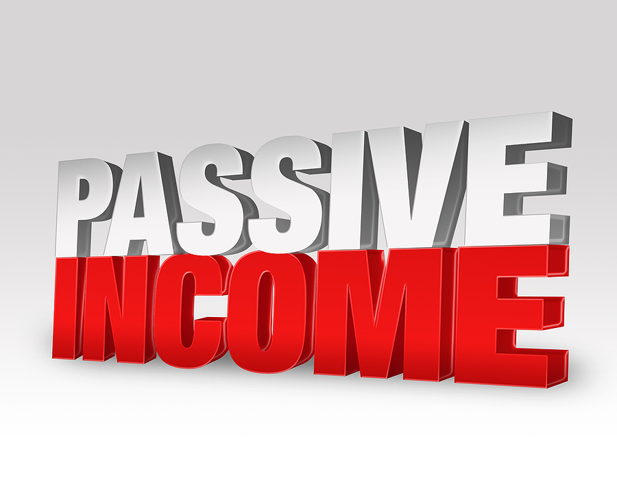

Passive Income Definition
 Investopedia uses cookies to provide you with a great user experience. By using Investopedia, you accept our use of cookies. x Education General Dictionary Economics Corporate Finance Roth IRA Stocks Mutual Funds ETFs 401(k) Investing/Trading Investing Essentials Fundamental Analysis Portfolio Management Trading Essentials Technical Analysis Risk Management Markets News Company News Markets News Trading News Political News Trends Popular Stocks Apple (AAPL) Tesla (TSLA) Amazon (AMZN) AMD (AMD) Facebook (FB) Netflix (NFLX) Simulator Simulator Create an Account Join a Game My Simulator My Game Create a Game Your Money Personal Finance Wealth Management Budgeting/Saving Banking Credit Cards Home Ownership Retirement Planning Taxes Insurance Reviews & Ratings Best Online Brokers Best Savings Accounts Best Home Warranties Best Credit Cards Best Personal Loans Best Student Loans Best Life Insurance Best Auto Insurance Advisors Your Practice Practice Management Continuing Education Financial Advisor Careers Investopedia 100 Wealth Management Portfolio Construction Financial Planning Academy Popular Courses Investing for Beginners Become a Day Trader Trading for Beginners Technical Analysis Courses by Topic All Courses Trading Courses Investing Courses Financial Professional Courses Part Of Income Tax Term Guide Explore The Guide Overview Filing Status Overview Head of Household Married Filing Jointly Married Filing Separately Single Filer The Difference Between Single vs. Married Tax Withholding Types of Income Overview Active Income Business Income Earned Income Gross Income Adjusted Gross Income (AGI) Modified Adjusted Gross Income (MAGI) Ordinary Income Passive Income Personal Income Taxable Income Unearned Income Tax Types and Terms Overview The Difference Between Income Tax vs. Capital Gains Tax Direct Tax Gift Tax State Income Tax Tax Bracket Value-Added Tax (VAT) Wealth Tax Withholding Tax Investing Investing EssentialsPassive Income
By James Chen Reviewed By Gordon Scott Updated Mar 3, 2020What Is Passive Income?
Passive income is earnings derived from a rental property, limited partnership , or other enterprise in which a person is not actively involved. As with active income, passive income is usually taxable. However, it is often treated differently by the Internal Revenue Service (IRS). Portfolio income is considered passive income by some analysts, so dividends and interest would therefore be considered passive. However, the IRS does not always agree that portfolio income is passive , so it’s wise to check with a tax professional on that subject.
1:18Passive Income
Understanding Passive Income
There are three main categories of income: active income , passive income, and portfolio income. Passive income has been a relatively loosely used term in recent years. Colloquially, it’s been used to define money being earned regularly with little or no effort on the part of the person receiving it. Popular types of passive income include real estate, peer-to-peer lendng (P2P) , and dividend stocks. Proponents of earning passive income tend to be boosters of a work-from-home and be-your-own-boss professional lifestyle. The type of earnings people usually associate with this are gains on stocks, interest, retirement pay, lottery winnings, online work, and capital gains.
While these activities fit the popular definition of passive income, they don’t fit the technical definition as outlined by the IRS’s Passive Activity Losses—Real Estate Tax Tips . Passive income, when used as a technical term, is defined as either “net rental income” or “income from a business in which the taxpayer does not materially participate,” and in some cases can include self-charged interest. It goes on to say that passive income “does not include salaries, portfolio, or investment income.”
Key Takeaways
Passive income is income that is earned from rental property or an enterprise in which the investor is not actively involved. Passive income encompasses different sources, from loans to a foreign corporation to property.Types of Passive Income
Self-Charged Interest
When money is loaned to a partnership or an S-corporation acting as a pass-through entity (essentially, a business that is designed to reduce the effects of double taxation) by that entity’s owner, the interest income on that loan to the portfolio income can qualify as passive income. According to the IRS, “Certain self-charged interest income or deductions may be treated as passive activity gross income or passive activity deductions if the loan proceeds are used in a passive activity.”
Property
Rental properties are defined as passive income with a couple of exceptions. If you’re a real estate professional, any rental income you’re making counts as active income. If you’re “self-renting,” meaning that you own a space and are renting it out to a corporation or partnership where you conduct business, that does not constitute passive income unless that lease had been signed before 1988, in which case you’ve been grandfathered into having that income being defined as passive. According to the IRS’s Passive Activity and At-Risk Rules, “It doesn’t matter whether or not the use is under a lease, a service contract, or some other arrangement.”
However, income from leasing land does not qualify as passive income. Despite this, a land owner can benefit from passive income loss rules if the property nets a loss during the tax year. As far as holding land for investment, any earnings would be considered active.
‘No Material Participation’ in a Business
If you put $500,000 into a candy store with the agreement that the owners would pay you a percentage of earnings, that would be considered passive income as long as you do not participate in the operation of the business in any meaningful way other than placing the investment. The IRS states, however, that if you did help manage the company with the owners, your income could be seen as active, because you provided “material participation."
The IRS has standards for material participation that include the following:
If you’ve dedicated more than 500 hours to a business or activity from which you’re profiting, that is material participation. If your participation in an activity has been “substantially all” of the participation for that tax year, that is material participation. If you’ve participated up to 100 hours and that is at least as much as any other person involved in the activity, that also is defined as material participation.Special Considerations
When you record a loss on a passive activity , only passive activity profits can have their deductions offset instead of the income as a whole. It would be prudent to ensure that all your passive activities were classified that way, in order to make the most of the tax deduction. These deductions are allocated for the next tax year and are applied in a reasonable manner that takes into account the next year’s earnings or losses.
To save time and effort, you can group two or more passive activities into one larger activity, provided you form an “appropriate economic unit,” according to the Passive Activity and At-Risk Rules. When you do this, instead of having to provide material participation in multiple activities, you only have to provide it for the activity as a whole. In addition, if you include multiple activities into one group and have to dispose of one of those activities, you’ve only done away with part of a larger activity as opposed to all of a smaller one.
The organizing principle behind this grouping is relatively simple: if the activities are located in the same geographic area; if the activities have similarities in the types of business; or if the activities are somehow interdependent, for instance, if they have the same customers, employees, or use a single set of books for accounting.
If you owned a pretzel store and a sneaker store located in malls in both Monterey, Calif., and Amarillo, Texas, you would have four options for how to group their passive income:
Grouped into one activity (all businesses were in shopping malls); Grouped by geography (Monterey and Amarillo); Grouped by type of business (retail sales of pretzels and shoes); Or they could remain ungrouped.Article Sources
Investopedia requires writers to use primary sources to support their work. These include white papers, government data, original reporting, and interviews with industry experts. We also reference original research from other reputable publishers where appropriate. You can learn more about the standards we follow in producing accurate, unbiased content in our editorial policy.IRS Publication 925. " Passive Activity and At-Risk Rules ," page 6. Accessed Jan. 12, 2020.
IRS Publication 925. " Passive Activity and At-Risk Rules ," page 3. Accessed Jan. 12, 2020.
IRS Publication 925. " Passive Activity and At-Risk Rules ," page 5. Accessed Jan. 12, 2020.
IRS Publication 925. " Passive Activity and At-Risk Rules ," page 8. Accessed Jan. 12, 2020.
Compare Accounts Advertiser Disclosure × The offers that appear in this table are from partnerships from which Investopedia receives compensation. Provider Name DescriptionRelated Terms
Passive Activity Loss Rules Passive activity loss rules are a set of IRS rules that prohibits using passive losses to offset earned or ordinary income. more Passive Loss A passive loss is a financial loss within an investment in any trade or business enterprise in which the investor is not a material participant. more Passive Activity Passive activity is activity that a taxpayer did not materially participate in during the tax year. more At-Risk Rules Definition At-risk rules are tax laws limiting the amount of losses a taxpayer can claim. Only the amount actually at risk can be deducted. more Suspended Loss Definition A suspended loss is a capital loss that cannot be realized in a given tax year due to passive activity limitations. more What Is Active Income? Active income refers to income received from performing a service. Wages, tips, salaries, and commissions are all examples of active income. more Partner LinksRelated Articles
Small Business
Money Guide for Self-Employed Parents
Oil
Oil: A big investment with big tax breaks
Trading Lifestyle
Benefits for Active Traders Who Incorporate
Real Estate Investing
Whether to Flip a House or Use Buy-and-Hold
Dividend Stocks
Are Dividends Considered Passive or Ordinary Income?
Tax Deductions / Credits